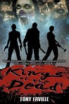
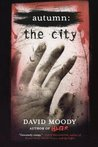

is a romance novel written by Jojo Moyes. The book was first published on 5 January 2012 in the United Kingdom. A sequel titled After You was released 29 September 2015 through Pamela Dorman Books.
Author
Jojo Moyes
Country
United Kingdom
Language
English
Genre
Romance Fiction
Publisher
Michael Joseph
Publication date
5 January 2012
Media type
Print (hardcover, paperback)
Pages
480
ISBN
0-71-815783-4
Followed by
After You

About this Item
Louisa Clark leads a routine existence: at 26, she's dully content with her job at the cafe in her small English town and with Patrick, her boyfriend of six years. But when the cafe closes, a job caring for a recently paralyzed man offers Lou better pay and, despite her lack of experience, she's hired. Lou's charge, Will Traynor, suffered a spinal cord injury when hit by a motorcycle and his raw frustration with quadriplegia makes the job almost unbearable for Lou. Will is quick-witted and sardonic, a powerhouse of a man in his former life (motorcycles; sky diving; important career in global business). While the two engage in occasional banter, Lou at first stays on only for the sake of her family, who desperately needs the money. But when she discovers that Will intends to end his own life, Lou makes it her mission to persuade him that life is still worth living. In the process of planning "adventures" like trips to the horse track-some of which illuminate Lou's own minor failings-Lou begins to understand the extent of Will's isolation; meanwhile, Will introduces Lou to ideas outside of her small existence. The end result is a lovely novel, both nontraditional and enthralling. Agent: Sheila Crowley, Curtis Brown. (Dec.) (c) Copyright PWxyz, LLC. All rights reserved.
ABOUT JOJO MOYES.

Jojo Moyes is a British novelist.
Moyes studied at Royal Holloway, University of London. She won a bursary financed by The Independent newspaper to study journalism at City University and subsequently worked for The Independent for 10 years. In 2001 she became a full time novelist.
Moyes' novel Foreign Fruit won the Romantic Novelists' Association (RNA) Romantic Novel of the Year in 2004.
She is married to journalist Charles Arthur and has three children.
Me Before You is a 2016 British-American romantic drama film directed by Thea Sharrock in her directorial debut and adapted by English author Jojo Moyes from her 2012 novel of the same name.
Plot
26-year-old Louisa Clark (Emilia Clarke) is a happy, outgoing woman who lives with and supports her working-class family. After losing her job at a local cafe, she is hired as the caregiver of Will Traynor (Sam Claflin), a former successful banker and once active young man who became paralyzed after being involved in a motorcycle accident two years prior. Louisa has no experience but Will's mother believes her cheery personality will help lift his spirits. Will only spends time with Nathan, his nurse, who assists with his care, exercise and movement and knows that he will never regain use of his body due to the damage to his spinal cord.
Cynical and depressed because he can no longer live an active life, Will initially reacts coldly to Louisa's upbeat demeanor and treats her with contempt. After two weeks, Will has a visit from his former best friend Rupert and ex-girlfriend Alicia who reveal that they are engaged. Will manages to smash all the photographs on his dresser in anger and indignation, which Louisa tries to repair the next day, leading to a verbal altercation during which Louisa chastises him for being an arse. The next day, Will asks Louisa to watch a film with subtitles with him, and she accepts. The two begin to bond and eventually become close friends. Louisa and Will continue to talk daily; she learns that he is cultured and worldly, having traveled extensively. In contrast, her life so far has been simple, without many interests or hobbies or travel away from home. Her long-term boyfriend, Patrick (Matthew Lewis), is training to take part in a Viking triathlon in Norway, a hobby that he often chooses over spending time with her. Will urges Louisa to broaden her horizons and tells her that it's her responsibility to live life as fully as possible.